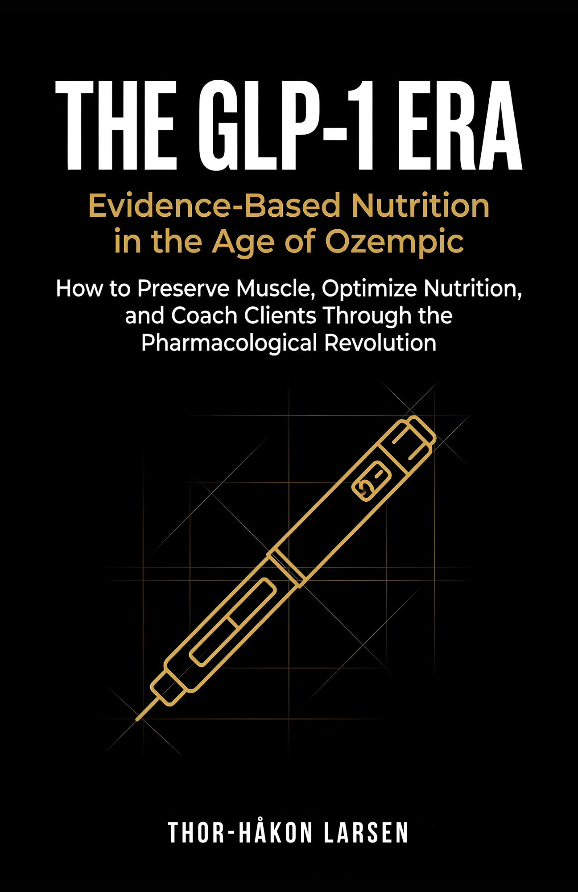

The GLP-1 Era
Evidence-Based Nutrition in the Age of OzempicEvidensbasert ernæring i Ozempic-alderen
Forty million prescriptions. Fifteen percent body weight lost. And nobody told them about the muscle. Clinical trials show that 30–40% of weight lost on semaglutide and tirzepatide is lean tissue. A patient who drops 15 kilograms on Wegovy typically loses 5–6 kilograms of muscle. Not because the drug destroys it — because nobody optimized the protocol around it.Førti millioner resepter. Femten prosent kroppsvekt tapt. Og ingen fortalte dem om muskelen. Kliniske studier viser at 30–40 % av vekttapet på semaglutid og tirzepatid er muskelmasse. En pasient som går ned 15 kilo på Wegovy mister typisk 5–6 kilo muskler. Ikke fordi medikamentet ødelegger dem — fordi ingen optimaliserte protokollen rundt det.
About the BookOm boken
The GLP-1 Era is divided into two parts. Part I is for GLP-1 users directly: protein-first eating strategies adapted for severe appetite suppression, resistance training programs for beginners, and electrolyte protocols to manage common side effects. Part II is for coaches and practitioners: complete intake assessment frameworks, three-tier meal plans, coaching scripts for clients who “can’t eat,” special population protocols for elderly and athletic clients, and discontinuation strategies backed by STEP and SURMOUNT trial data.
The GLP-1 Era er delt i to deler. Del I er for GLP-1-brukere direkte: protein-først-strategier tilpasset alvorlig appetittundertrykking, styrketreningsprogrammer for nybegynnere og elektrolyttprotokoller for vanlige bivirkninger. Del II er for coacher og praktikere: komplette inntak-vurderingsrammeverk, tre-nivå måltidsplaner, coachingskript for klienter som «ikke klarer å spise,» spesialpopulasjonsprotokoller for eldre og aktive klienter, og seponeringstrategier basert på STEP- og SURMOUNT-studiedata.
What You’ll LearnHva du vil lære
- How GLP-1 agonists affect body composition and why lean mass loss is the real riskHvordan GLP-1-agonister påvirker kroppssammensetning og hvorfor muskeltap er den reelle risikoen
- Protein-first eating strategies designed for severe appetite suppressionProtein-først-strategier designet for alvorlig appetittundertrykking
- Resistance training programs for GLP-1 users who have never lifted weightsStyrketreningsprogrammer for GLP-1-brukere som aldri har trent med vekter
- Electrolyte management and supplementation protocols for common GLP-1 side effectsElektrolytthåndtering og tilskuddsprotokoller for vanlige GLP-1-bivirkninger
- Coaching frameworks: intake assessments, three-tier meal plans, and scripts for resistant clientsCoaching-rammeverk: inntaksvurderinger, tre-nivå måltidsplaner og skript for motvillige klienter
- Discontinuation strategies: what happens when clients stop, and how to manage the transitionSeponeringstrategier: hva som skjer når klienter slutter, og hvordan håndtere overgangen
Who This Book Is ForHvem boken er for
Part I is for anyone currently on semaglutide (Ozempic/Wegovy), tirzepatide (Mounjaro), or considering GLP-1 medication. Part II is for nutrition coaches, personal trainers, dietitians, and physicians who are already seeing GLP-1 clients walk through their doors and need structured, evidence-based protocols to serve them properly.
Del I er for alle som bruker semaglutid (Ozempic/Wegovy), tirzepatid (Mounjaro) eller vurderer GLP-1-medisinering. Del II er for ernæringscoacher, personlige trenere, ernæringsfysiologer og leger som allerede ser GLP-1-klienter komme inn døren og trenger strukturerte, evidensbaserte protokoller for å hjelpe dem ordentlig.
DetailsDetaljer
LanguageSpråk
EnglishEngelsk
GenreSjanger
GLP-1 & Pharmacological NutritionGLP-1 & farmakologisk ernæring
ComparableSammenlignbare
The Obesity Code (Fung), Why We Get Sick (Bikman), The Renaissance Diet 2.0 (Israetel)
Stay in the LoopHold deg oppdatert
Get notified when this title is available.Få beskjed når denne tittelen er tilgjengelig.
SubscribeAbonner